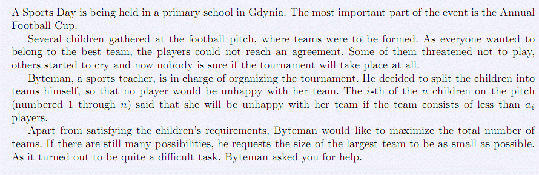
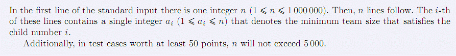
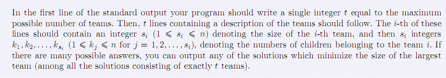

BZPRO
#2386. [Ceoi2011]Team
内存限制：128 MiB
时间限制：30 Sec
提交
提交记录
讨论
题目描述

v
格丁尼亚一所小学将举办运动日，其中最重要的活动是
年度足球杯赛。参赛的球队是赛前临时组建的。不难想
象每个小选手都想加入到最好的球队中。
v
体育老师
Byteman
负责组织这项比赛。为了满足所有选
手的愿望，他决定把这些选手按他们各自的意愿分到各
个球队。第
i
个选手（共
n
个，编号
1
…
n
）表示，如果球
队少于
a
i
个队员，他就不愿意留在这个球队。
v
除满足选手们的要求外，
Byteman
希望球队的数目尽可
能多。如果仍有多种选择，则要求人数最多的球队的队
员人数尽可能少。这项任务难度不小，
Byteman
需要你
的帮助。
输入格式

◆
第一行是整数
n(1
≤
n
≤
10^6
)
。然后是
n
行，其中第
i
行包括一
个整数
a
i
(1
≤
a
i
≤
n
），表示满足第
i
个选手的球队的最少人数。
◆
至少
50
分的测试数据，
n
≤
5000
。
输出格式

第一行输出
1
个整数
t
，表示可能组建球队的最大数目。接下来的
t
行是对各个球队的描述，其中第
i
行包含
1
个整
数
s
i
（
1
≤
s
i
≤
n
）
,
表示第
i
个球队的人数，然后是
s
i
个整数
k
1
，
k
2
，
…
，
k
s
i
(1
≤
k
j
≤
n,j=1,2,…,s
i
),
表示属于第
i
个球队的队员的编号。
样例
样例输入
5
2
1
2
2
3
样例输出
2
数据范围与提示